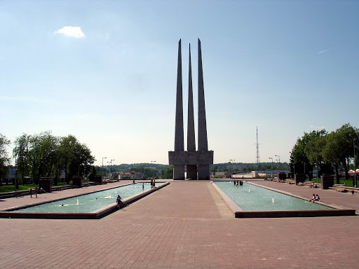

У каждого города есть свои знаковые объекты. В Витебске – это мемориальный комплекс "Три штыка", в
котором запечатлен бессмертный подвиг народа. Три штыка величественно возвышаются над городом,
напоминая горожанам вновь и вновь о прожитых суровых годах и о великой жертве советского народа во имя Победы.
В списке достопримечательностей Витебска мемориал появился в 1974 году. Тогда на главной городской площади Победы
возвысился символичный мемориальный комплекс "Три штыка" по проекту архитектора Ю.Шпита. Но время шло, город
развивался, и стала очевидной назревающая реконструкция объекта. Масштабная реставрация началась в 2009 году
– и спустя год мемориал преобразился. После реконструкции комплекс приобрел современный внешний вид и
оригинальный дизайн. Сегодня мемориал "Освободителям Витебска - советским воинам, партизанам и подпольщикам"
- это огромный комплекс, где каждому элементу отведен свой особый смысл, - будь то площадь, парк, скульптурные
композиции или же бассейны со струящейся водой, которая символизирует пролитые кровь и слезы… И все это служит
своего рода предысторией к великой трагедии, необычным обрамлением центрального монумента комплекса – мемориала
"Три штыка".
Сегодня мемориальный комплекс "Три штыка" является главным украшением площади Победы в Витебске.
Издалека трудно не заметить три суживающихся кверху 56-метровых пилона-обелиска трапециевидной формы.
Вверху, на высоте примерно пяти метров, обелиски объединены в единую композицию при помощи монолитного
фриза, на трех гранях которого выполнены рельефы, прославляющие бессмертный подвиг воинов, партизан и
подпольщиков. Но пилоны соединены не только внешне – внутри также имеется кольцо, соединяющее три обелиска,
с надписью "Слава героям". А под ним, на символичном постаменте в форме пятиконечной звезды, зажжен Вечный огонь
– как дань памяти трагическим страницам истории Витебска, мужеству горожан и всего советского народа. Особенно
красив комплекс в вечернее время, когда на город спускаются сумерки. В свете ночных огней мемориал выглядит
еще более торжественно. Особую изысканность комплексу придает оригинальная подсветка каждого его элемента.